Geometric and algebraic properties of polyomino tilings
by Michael Robert Korn (Chapter 3-4)
Previously on Polyomino Tilings
- Polyomino – każdy kształt stworzony przez połączenie pewnej ilości komórek ze sobą.
- Wymagamy żeby komórki były połączone krawędziami, a nie tylko w kątach.
- Polyomino mogą mieć „dziury”.
Typy polyomino
- Wolne(Free) polyomino mogą być obracane i odzwierciedlane
- Jednostronne(One-sided) polyomino mogą być tylko obracane
- Stałe(Fixed) polyomino są stałe
Lokalny ruch(Local move)
- Lokalny ruch to operacja przeksztalcająca jedno kafelkowanie(pokrycie) w inne.
“Essentially, a local move consists of "picking up" some number of tiles from a tiling then placing new tiles to fill that space in a different way”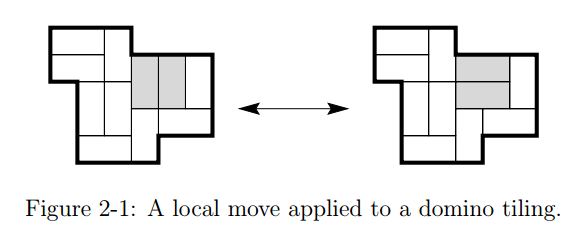
Lokalna łączność(Local connectivity)
- Niech T będzie zbiorem kafelków.
- Niech L będzie skończonym zbiorem dozwolonych lokalnych ruchów dla tego zbioru kafelków.
- Więc L to zbiór małych regionów które możemy pokryć na co najmniej 2 sposoby.
- Niech Γ będzie dowolnym kafelkowalnym regionem.
- Definiujemy graph lokalnych ruchów dla (T, L, Γ) umieszczając wierzcholek dla każego pokrycia Γ i umiejscowiając krawędź pomiędzy dwoma wierzchołkami jeśli odpowiednie pokrycia są powiązane lokalnym ruchem który należy do L.
Kafelkowe niezmienniki(Tile invariant)
- Niech T będzie zbiorem n polyomino kafelków. Oznaczymy je t1,....,tn.
- Niech R będzie zbiorem N regionów i niech Γ będzie regionem w R i niech τ będzie kafelkowaniem tego regionu.
- Zdefiniujmy Ai(t) jako ilość wystąpień kafelka ti w kafelkowaniu τ.
- Kafelkowy niezmiennik to funkcja liniowa Ai(t) wartości której zależą tylko od regionu Γ, a nie od pokrycia tego regionu.
- Przykład : typowym kafelkowym niezmiennikiem może być równanie A1(τ) + 2*A3(τ) = stała (mod 5)
Zbiór kafelkowych niezmienników(Tile counting group)
Lemma 3.1 Jeśli R jest zbiorem wszystkich regionów, wszystkich simply-connected regionów albo wszystkich prostokątów wtedy zbiór ΛT,R jest integralną siatką(integral lattice).
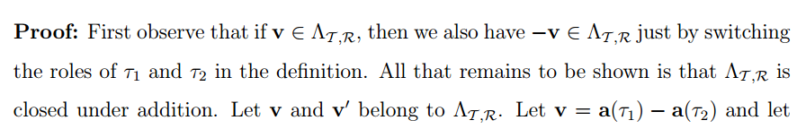 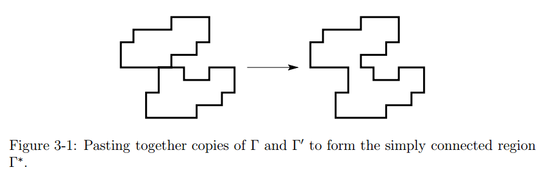Udowodnienie kafelkowych niezmienników
Istnieje 3 podstawowe techniki udowadniania
- Kolorowanie
- Argumenty brzegowe wyrazu
- Przez lokalną łączność
Kolorowanie
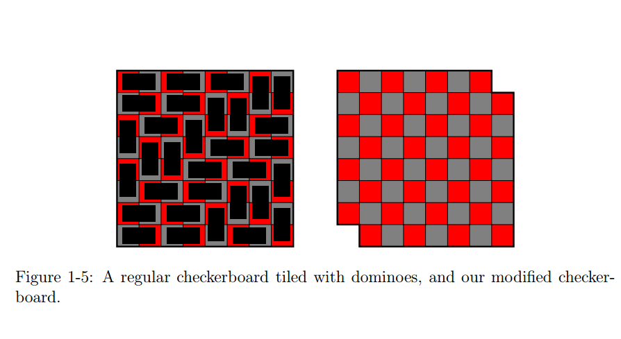Argumenty brzegowe wyrazu
Idea to przypisać litery do skierowanych krawędzi pół i rozpatrywać słowa otrzymane po przechodzeniu po granicy simply connected regionu. W ich pracy poziome krawędzie to A i są skierowane na wchód, a pionowe to B i są skierowane na północ. Potem żęby otrzymać słowo z granicy regionu zacznij z dowolnego punktu granicy Γ i poruszaj się przeciwnie do wskazówek zegara. Każda krawędź która przechodzimy zgodnie z wskazówką strzałki zapisz jej literę, a jeśłi przeciwnie to zapisz tą literę odwrotnie.
Lokalna lącznośc
Trzeci sposób wykorzystuje lokalną lączność. Jeśłi istnieje lokalny ruch z T i R wtedy istnieje pewny zbiór lokalnych ruchów L takiech że oni mogą przeksztalcic każde kafelkowanie w każde inne. Zostaje tylko pokazać że kafelkowy niezmiennik zostaje dla każdego z lokalnych ruchów.
Domino
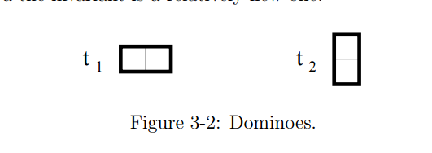Mamy C pół, chcemy pokryć to wszystko dominami. Jeśli możemy pokryć ten region to ilość wykorzystanych domin zawsze będzie C/2. Więć mamy kafelkowy niezmiennik a1(τ1) + a2(τ2) = C/2 co jest zawsze prawdą niezależnie od tego jakie mamy pokrycie.
Domino
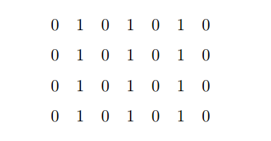Możemy rozpatrzeć następne kolorowanie. Niech d będzie sumą wartości wszystkich pół Γ mod 2. Pionowe domino zawsze ma wartość 0 mod 2 , a poziome zawsze ma wartość 1 mod 2. Więc, a1(τ) = d mod 2a i a1(τ) jest niezmiennikiem mod 2.
Domino
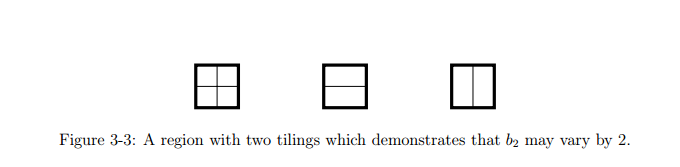Możemy rozpatrzyć następne kolorowanie. Spróbujemy pokazać żę nie istnieje kafelkowań które nie są takie jak pokazaliśmy. Zdefiniujemy b1(τ) = a1(τ) + a2(τ) i b2(τ) = a1(τ). Już pokazaliśmy że b1(τ) jest niezmiennikiem , a b2(τ) jest niezmiennikiem mod 2. Więc każdy element w integralnej siatce musi być w formie (0,2c) w bazie b. Żeby pokazać że to są najlepsze możliwe niezmienniki skonstruujemy region Γ taki że dla kafelkowan τ1 i τ2 , takie że b2(τ1) i b2(τ2) różnią się dokładnie o 2 . To udowodni żę b-wektor (0,2) należy do integralnej siatki ΛT,R i z tego wynika że całkowicie zdefiniowaliśmy integralną siatkę
T-tetrominoes
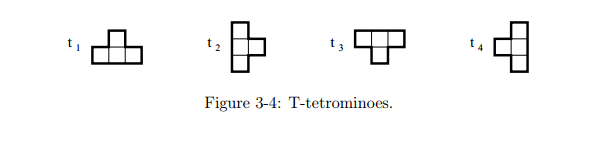Zdefiniujmy naszą bazę
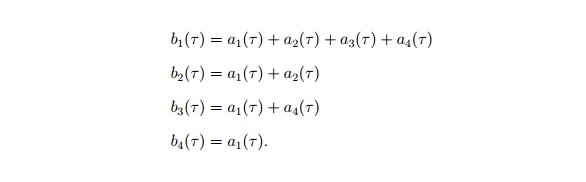T-tetrominoes
Twierdzenie 3.2 Mówimy że b1(τ) jest niezmiennikiem (mod ∞), b2(τ) jest niezmiennikiem mod 4 i b3(τ) jest niezmiennikiem mod 4.

Dla każdego tetromino t1 lub t2 umieszczonego w tym regionie suma którą ono będzie pokrywać jest równa 8 mod 32 , kiedy każde tetromino t3 lub t4 jest równe 0 mod 32 . Więc suma wszystkich pól w Γ jest równa 8*b2(τ) mod 32, więc b2(τ) jest niezmiennikiem mod 4. Dla b3(τ) możemy udowodnić to tak samo obracając region.
T-tetrominoes
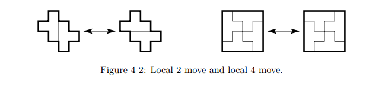Dwa naturalne lokalne ruchy T-tetromino nazywamy 2-ruchem i 4-ruchem
Nich punkt typu A którego współrzędne są kongruentne mod 4 do (0,0) lub (2,2) i niech punkt typu B którego współrzędne są kongruentne mod 4 do (0,0) lub (2,2).
“Twierdzenie 4.2 Jeśli prostokąt n * m może być pokryty T- tetromino wtedy i m i n są podzielne przez 4. Ponadto, wszystkie segmenty dotykające punktów typu-A są cięciami, a wszystkie punkty typu-B są bezróżne.”
T-tetrominoes
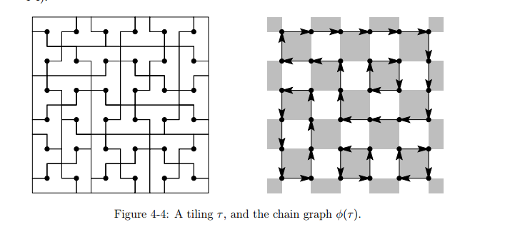Zdefiniujemy antyblok jako kwadrat 2x2 kąty którego mają parzyste współrzędne. Pokolorujemy antybloki białym i szarym, tak że antybloki w centrum których jest punkt typu A są szare i w centrum których jest punkt typu B będą białe.
“Twierdzenie 4.3 Dla każdego 4m x 4n prostokąta Г ilość grafów łańcuchowych jest równa ilości kafelkowań. ”
Funkcje wysokości
Nazwijmy punkt współrzędne którego są kongruentne mod 4 do (0,0) punktem typu A0. Podobnie, punkt kongruentny do (2,2) będziemy nazywać punktem typu A1 (punkty kongruentne do (0,2) lub (2,0) bez zmian będziemy nazywać punktami typu B). Dla 4m x 4n prostokąta Г niech Wг będzie zbiorem punktów w Г które mają nieparzyste współrzędne. Niech δ Γ oznacza zbiór punktów granicznych Γ Mówymi że funkcja f:Wг → Z jest funkcją wysokości jeśli:
- f(x) = 0 dla wszystkich x є δ Γ.
- f(x) jest parzystą liczbą dla wszystkich punktów typu A0
- f(x) jest nieparzystą liczbą dla wszystkich punktów typu A1
- |f(x) – f(y)| <= 1 kiedy x i y sąsiadują ze sobą(na odleglości 2 jednostek)
Funkcje wysokości
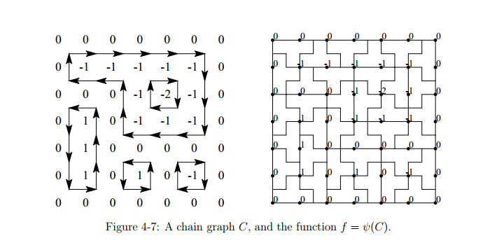“Twierdz 4.4 Dla każdego prostokątu Γ mamy |Ηγ| = |Υγ| ”
Definiujemy ψ: Cγ → Ηγ następująco. Niech C є Cγ będzie gafem łańcuchowym. Zdefiniujemy funkcę f0 na powierzchni C następującymi regulami. f0 ma wartość 0 na „bezgranicznej”(unbounded) powierzchni C. Jeśli kwarędź grafu wskazuje na prawo to zwiększamy wartość f0 o 1.(jeśli lewo to -1). Teraz zdefiniujemy f: Wγ → Z pozwalając f(x) być równym wartośći f0 na powierzchni na której leży x.
Fragments
Hit the next arrow...
... to step through ...
... a fragmented slide.
Marvelous List
- No order here
- Or here
- Or here
- Or here
Fantastic Ordered List
- One is smaller than...
- Two is smaller than...
- Three!
Clever Quotes
These guys come in two forms, inline:
“The nice thing about standards is that there are so many to choose from”
and block:
“For years there has been a theory that millions of monkeys typing at random on millions of typewriters would reproduce the entire works of Shakespeare. The Internet has proven this theory to be untrue.”
Export to PDF
Presentations can be exported to PDF, here's an example: